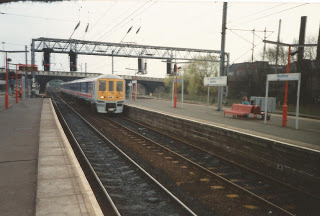

The English Regional Transport Association (ERTA) is a voluntary membership-based, pro-public transport improvement association with its main projects initially in the Bedfordshire and surrounding regional areas. Several of its projects have a nation-wide positive benefit and impact. Membership is open to all. It firmly supports an Ampthill Station being put back on the railway map and sees Luton Airport-Ampthill/CentreParcs-Bedford-Northampton/University Campus by one Thameslink train, as informative of an arc and Luton-Northampton M1 end-to-end, offering a comprehensive joined up rail alternative with no need to change, saving time and money.
Also Oxford-Bedford-Northampton/Cambridge could be possible freeing up capacity on the West Coast Main Line for passenger and freight workings. We need a renaissance in more freight by rail and decluttering our roads. This is best done by small projects which grow incrementally in a framework and industry which wants growth and is allowed by Government. Scotland’s rail links have been progressively reopened and Wales is also seeing new lines like Ebbw Vale restored to a full passenger service after many years dormant. So why not the English Regions? East-West Rail should be one of a top 10 per region, not a one-off for the whole of England! Please join ERTA and help strengthen our efforts to bring about changes, advocate schemes and engage where necessary processes for changes for the better.
As an independent, voluntary association we rely on a growing membership to help us pay the way, invest in our campaigning work and maintain a network of activists who seek to forward our goals. Members get regular newsletters keeping them abreast of progress, news and outlaying opportunities to get involved, engage and be actively playing a part to make the most of any opportunities which come our way.
On behalf of ERTA I warmly welcome you to the association.